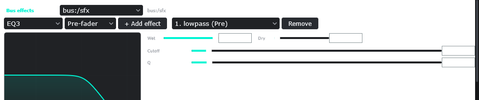
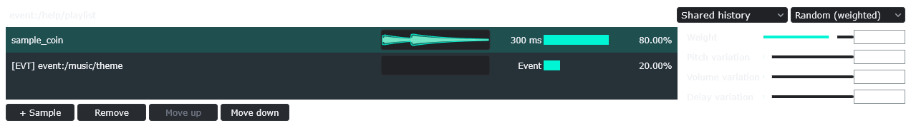
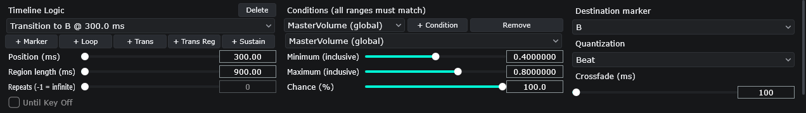
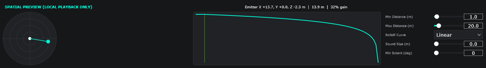
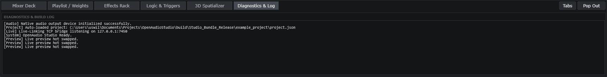
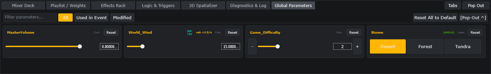

Capítulo 7 — Bottom Deck e Diagnostics & Log
Use o Bottom Deck para ajustar a mixagem, os efeitos, as playlists, a lógica e a prévia espacial. Consulte Diagnostics & Log na aba embutida ou encaixe o painel em uma divisão independente.
Reordenar, Encaixar e Destacar Abas (Docking)
O Bottom Deck possui flexibilidade completa de layout:
-
Reordenar abas: No menu
Tabsdo deck, utilizeMove active tab leftouMove active tab rightpara organizar as abas na sequência de trabalho desejada. -
Janelas Destacadas (Pop Out / Dock Back): Clique no botão
Pop Outpara transformar a aba ativa (como o Mixer ou o Effects Rack) em uma janela independente e flutuante. Você pode movê-la para um segundo monitor enquanto continua editando a timeline. Ao terminar, clique emDock Backpara devolver o painel à sua posição exata no deck. - Divisão independente de logs: arraste Diagnostics & Log para a borda inferior do Deck para manter as mensagens à vista enquanto usa as outras abas. Veja como montar e restaurar esse layout.
Aba 1 — Mixer Deck (Console, Gain Staging e Medição)

O Mixer Deck replica a arquitetura de uma mesa de som de grande formato (estilo SSL ou Neve). Cada coluna vertical representa uma tira de canal (Channel Strip) correspondente a um barramento (bus:/) ou a um controle remoto (vca:/), finalizando na tira mestre à esquerda (Master Bus).
Gain Staging (Estrutura de Ganho): No áudio digital, 0 dBFS é o limite absoluto. Se a soma das dezenas de sons ultrapassar 0 dBFS antes do Master, ocorre distorção harmônica severa (clipping). Mantenha os barramentos de categoria com margem de segurança (headroom de -6 dB a -12 dB) e use o Master Fader como ajuste final da entrega.
Controles e Recursos da Tira de Canal
| Elemento | Função Acústica / Técnica | Como Operar |
|---|---|---|
| Fader de Volume | Controla o ganho nominal do barramento em decibéis (de -80.0 dB até +10.0 dB). |
Arraste o slider vertical. Segure Shift para ajuste fino de 0.1 dB ou dê duplo-clique para resetar para 0.0 dB. |
| Botão Mute (M) | Silencia instantaneamente a saída do barramento selecionado, sem interromper as instâncias ativas. | Clique para ligar/desligar. Ideal para isolar problemas de frequência e ruído em categorias específicas. |
| Botão Solo (S) | Silencia todos os outros barramentos do mesmo nível hierárquico, permitindo audição exclusiva. | Clique para isolar a categoria (ex: ouvir apenas as vozes sem interferência de efeitos sonoros). |
| Balística de Medição | Exibe barras duplas (canais esquerdo e direito) combinando medição de Pico e RMS. | O traço sólido representa o pico instantâneo (Sample Peak); o corpo mais denso reflete a potência contínua (RMS). |
| Escala K-System | Seletor de calibração de sonoridade acústica profissional (desenvolvido pelo engenheiro Bob Katz). | Alterne entre dBFS Nominal (pico digital padrão), K-12 (jogos rápidos/broadcast), K-14 (jogos de ação e música moderna) e K-20 (cinema e jogos cinematográficos de ampla faixa dinâmica). |
| Linha de Snapshots | Lista todos os estados dinâmicos cadastrados no projeto (ex.: pause_menu). |
Clique sobre o nome do snapshot para ativá-lo em tempo real durante a reprodução da timeline e ouvir a atenuação imediata dos barramentos vinculados. |
Aba 2 — Effects Rack (Os 7 DSPs Nativos Dissecados)

O processamento de sinal digital (DSP) no OpenAudio Studio funciona em série: o áudio gerado pelo evento (ou somado no barramento) entra no primeiro efeito, sua saída transformada é entregue ao segundo, e assim sucessivamente. A ordem dos efeitos altera profundamente o timbre resultante (por exemplo: aplicar Reverb antes de uma Distorção soa completamente diferente de Distorcer o som e depois enviá-lo ao Reverb!).
Os 7 Efeitos DSP Nativos e seus Parâmetros
1. EQ3 (Equalizador Paramétrico de 3 Bandas)
Permite esculpir a resposta de frequência do som dividindo o espectro em três regiões:
- Low Shelf (Graves): Ganho de -24 dB a +24 dB com corte fixo em 250 Hz. Use para atenuar ruídos de vento ou dar peso a explosões.
- Mid Peaking (Médios): Ganho de -24 dB a +24 dB, frequência central varrível de 200 Hz a 8.000 Hz e controle de largura de banda (Q). Essencial para limpar frequências nasais de voz ou dar presença a disparos de fuzil.
- High Shelf (Agudos): Ganho de -24 dB a +24 dB com corte em 4.000 Hz. Use para clarear os detalhes de passos ou simular amortecimento de ar.
2. Compressor (+ Sidechain)
Controla a faixa dinâmica do sinal, reduzindo a diferença entre os trechos mais baixos e os mais altos:
- Threshold (Limiar, dB): O nível acima do qual o compressor começa a atenuar o áudio.
- Ratio (Proporção): A intensidade da compressão para sinais que ultrapassam o limiar (ex.:
4:1significa que para cada 4 dB que excederem o threshold, apenas 1 dB passa para a saída). - Attack (Ataque, ms): A rapidez com que o compressor age ao detectar um pico (ataques ultra-rápidos de 5 ms controlam transientes; ataques lentos de 50 ms preservam o impacto inicial do tambor ou tiro).
- Release (Soltura, ms): O tempo para o ganho retornar ao normal após o sinal baixar do limiar.
- Sidechain Input: Permite que o compressor de um barramento (ex: Música) seja acionado pelo áudio de outro canal (ex: Vozes de diálogo), criando o clássico efeito de ducking automático.
3. Limiter (Limitador de Pico)
Um compressor de proporção infinita ($\infty:1$) com tempo de ataque ultrarrápido, projetado como uma barreira rígida contra ceifamento digital.
- Ceiling (Teto, dBFS): O teto máximo absoluto (normalmente regulado em
-0.1 dBFSou-0.5 dBFSpara prevenir distorções na conversão analógica de placas de som de jogadores). - Release (ms): Tempo de recuperação da atenuação. Valores entre 80 ms e 200 ms oferecem transparência sem efeito de "bombeamento" (pumping).
4. Reverb (Simulação de Sala e Ambiência Acústica)
Simula a densidade de reflexões acústicas de um espaço físico tridimensional:
- Room Size (Tamanho da Sala, %): Varia a dimensão aparente do espaço, desde um quarto pequeno até uma catedral cavernosa.
- Damp (Amortecimento de Altas Frequências, %): Simula materiais absorventes (cortinas, madeira, público). Valores altos deixam a cauda do reverb mais escura e opaca.
- Wet / Dry Mix (%): Proporção entre o som direto original (Dry) e as reflexões reverberadas (Wet).
5. Delay (Ecos Temporizados)
Cria repetições discretas do sinal no tempo:
- Delay Time (Tempo de Atraso, ms): Intervalo entre o som original e suas repetições (ex.: 250 ms para ecos naturais de desfiladeiro).
- Feedback (%): Quantidade do sinal atrasado que é devolvida à entrada. Valores altos geram dezenas de repetições contínuas.
- Dry / Wet (%): Balanço entre o som original e as repetições ecoadas.
6. Chorus (Modulação Estéreo e Duplicação)
Modula micro-atrasos e micro-variações de afinação para criar a ilusão de múltiplos emissores tocando em uníssono.
- Rate (Frequência de Modulação, Hz): Velocidade da oscilação do LFO (Low Frequency Oscillator).
- Depth (Profundidade, ms): Amplitude da variação temporal; cria corpo, textura e sensação de largura no campo estéreo.
7. Distortion / Saturation (Saturação Harmônica)
Aplica funções não-lineares de transferência na forma de onda, gerando novos harmônicos que aumentam a percepção de peso e agressividade.
- Drive (%): Nível de sobrecarga da entrada. Cria desde um calor analógico sutil até distorção pesada de laser ou voz robótica.
- Tone (Frequência): Filtro tonal para moldar se a distorção ressalta agudos cortantes ou graves encorpados.
Aba 3 — Playlist / Weights (Estocástica e Anti-Metralhadora)

O efeito "metralhadora" ocorre quando a mesma amostra é disparada em rápida sucessão, destruindo a imersão pela repetição artificial idêntica. No OpenAudio Studio, Multi Instruments e Scatterer Instruments eliminam esse problema através de estocástica calibrada:
- Entradas Mistas: Cada item da playlist aceita uma amostra direta (WAV) ou um evento aninhado (EVT), permitindo disparar variações acústicas ou camadas de áudio completas.
- Independência entre Plays: O gerador pseudoaleatório (PCG32) utiliza semeadura não-determinística baseada em relógio de alta precisão e contadores atômicos para cada play independente, assegurando que prévias consecutivas no Studio ou no jogo variem realisticamente e convirjam para a distribuição dos pesos.
- Validação Anti-Ciclo: Ao adicionar eventos como alvos na playlist, o sistema rejeita automaticamente referências que criariam dependências circulares com o evento pai, desabilitando alvos cíclicos.
Modos de Reprodução da Playlist
-
Random (Weighted): Sorteio livre em cada disparo, respeitando estritamente a porcentagem de probabilidade calculada a partir dos pesos:
Probabilidade(Item_i) = Peso(Item_i) / Soma_Dos_Pesos_Totais - Shuffle: Percorre a lista embaralhada sem repetir até que todas as entradas tenham tocado; use a prévia repetida para observar as escolhas.
- Sequential: Avança pelas entradas na ordem exata da playlist.
Multi, Scatterer e Programmer com o projeto distribuído
Em uma cópia de example_project/project.json, crie um Multi Instrument numa faixa de teste e abra esta aba. Adicione sample_coin (coin.wav) e o evento aninhado event:/music/theme; selecione Random (Weighted) e use pesos 80 e 20. Ao pré-visualizar repetidamente, observe que os sorteios são independentes entre execuções consecutivas, alternando entre a moeda curta e o tema conforme as probabilidades estatísticas configuradas.
Para Scatterer, adicione sample_coin à lista e ajuste no Inspector Int Min / Int Max para 250/500 ms, Polyphony para 3 e Total para 6. O spawner agenda os grãos da playlist com atrasos aleatórios dentro da janela configurada, respeitando o limite simultâneo de polifonia e cessando após os 6 disparos. Alvos que criariam dependência cíclica direta ou indireta ficam desabilitados na lista.
Para Programmer Instrument, cadastre uma entrada na tabela de áudio (audio_table) com chave coin_demo apontando para sample_coin, e configure essa mesma chave no card do Inspector. Ao acionar o transporte, o Studio carrega a tabela no banco síncrono e a prévia reproduz imediatamente o sample mapeado em bus:/sfx. Consulte o tutorial de Multi, Scatterer e Programmer.
Aba 4 — Logic & Triggers (Linha do Tempo Não-Linear e Música Adaptativa)

MasterVolume está no intervalo selecionado. O crossfade dura 100 ms.
A Timeline do evento continua avançando, mas itens lógicos podem repetir uma região ou solicitar uma transição para um marcador de destino. Uma condição pode permitir ou bloquear o salto; a quantização escolhe quando efetuar uma transição permitida.
+--------------------------------------------------------------------------+
| EXEMPLO DE MÁQUINA DE ESTADOS NA TIMELINE |
+--------------------------------------------------------------------------+
| |
| [Seção Exploração (Loop A)] =======( Condição: Combate > 0.6 )========> |
| ^ | |
| | Repete em loop v (Salto Quantizado) |
| +----------------------- [Seção Batalha (Loop B)] |
| | |
| ( Condição: VidaInimigo == 0 ) |
| v |
| [Marcador Clímax / Vitória] |
+--------------------------------------------------------------------------+Componentes da Aba Logic & Triggers
| Elemento Lógico | Comportamento no Runtime | Aplicação Musical / Sonora |
|---|---|---|
| Loop Region | Faz o cursor de reprodução voltar ao início da região ao atingir o ponto final. | Manter uma base instrumental ou som contínuo (vento, motor) tocando indefinidamente. |
| Transition Marker / Region | Item lógico que referencia um Destination marker; uma região também possui início e comprimento. | Indicar o ponto ou o intervalo no qual a transição pode ocorrer. |
| Quantization (Quantização) | Adia uma transição permitida até a próxima batida (Beat) ou início de compasso (Bar); valor imediato executa sem espera musical. |
Impede que a música mude fora de tempo, preservando o ritmo e a métrica musical. |
| Transition Crossfade (ms) | Define a duração de crossfade usada na transição. | Garante transições imperceptíveis e fluidas entre temas musicais diferentes. |
| Sustain Point | Pausa o avanço do cursor na posição exata até que o código emita o sinal de KeyOff. |
Sons de armas com carregamento (Charge): sustenta o zumbido até o jogador soltar o gatilho. |
- Abra uma cópia de
example_project/project.jsone selecioneevent:/music/theme. Clique com o botão direito na régua para criar um Marker de destino em uma posição diferente e dê a ele o nomedestino. - Na posição de origem, crie Transition Region pelo menu da régua. Selecione-a nesta aba, escolha
destinoem Destination marker e adicione uma condição emMasterVolumecom Minimum (inclusive)0.4e Maximum (inclusive)0.8. - Defina Quantization como
Beate Crossfade (ms) como100. Na prévia, confirme o salto comMasterVolumedentro do intervalo; fora dele, confirme o avanço normal sem salto. Para uma lista já preenchida, veja Playlist / Weights e o passo a passo completo.
3D Spatializer — testar distância e posição
O painel aplica seus ajustes à instância de prévia local enquanto está visível. Para testar o cone direcional no jogo, configure o emissor e o listener na Unity.

A percepção humana de espaço depende de três fenômenos fundamentais:
- ITD (Interaural Time Difference): O som chega a um ouvido fração de milissegundo antes do outro.
- ILD (Interaural Level Difference): A cabeça amortece frequências agudas da orelha oposta à fonte.
- Atenuação e Filtragem Atmosférica: O ar dissipa frequências agudas proporcionalmente à distância percorrida.
Controles e resultado da prévia
-
Atenuação por Distância:
Min Distance (m):Distância abaixo da qual o som mantém ganho total nominal (0 dB).Max Distance (m):Limite de distância da curva. Observe o ganho mostrado pelo radar ao se aproximar desse limite.Rolloff Curve: compare Linear, Inverse e Quadratic na mesma posição.
- Cones de diretividade: a prévia local usa emissão omnidirecional. Os campos de cone do emissor Unity permitem reduzir o ganho fora da abertura, como no caso de uma caixa de som orientada para a frente.
- Absorção atmosférica: em uma situação física, o ar atenua frequências altas ao longo da distância. Os controles de distância do radar ajustam o ganho. Para obter uma mudança de timbre no projeto, configure o filtro e a automação desejados.
-
Sound Size (m) e Min Extent (deg): aumentam o espalhamento aparente e suavizam panoramas extremos. Compare o mesmo emissor lateral com os dois controles em zero e depois com
Min Extentmaior.
- Abra uma cópia de
example_project/project.jsone selecioneevent:/music/theme. Ative Loop, clique em Play e abra 3D Spatializer. - Com a curva Linear, posicione o emissor perto e longe do centro. Compare a distância e a porcentagem de ganho e ouça a diferença de volume. Depois compare lados opostos à mesma distância para ouvir o pan.
- Com o emissor próximo e lateral, aumente Sound Size e Min Extent. O panorama deve ficar menos extremo. Use Stop, desative Loop e volte o emissor ao centro ao terminar.
Diagnostics & Log — prévia, publicação e conexão
Use Log na Workspace Bar caso o painel esteja oculto. Quando embutido, selecione sua aba no Deck. Quando encaixado separadamente, abra o painel pelo cabeçalho Diagnostics & Log.

O que procurar nas mensagens
-
Publicação: ao acionar Build Bank, procure
[Build] Starting bank compilation...seguido de[Build] Bank compiled successfully!. Se aparecer[Build Error], leia o diagnóstico com o código de saída e os detalhes do erro antes de conferir os arquivos de saída. -
Prévia:
[Preview] Live preview hot swapped.indica que uma nova prévia foi instalada em memória.[Preview Build Error]indica que a reconstrução falhou. Confira o diagnóstico para localizar o campo ou arquivo que precisa de correção. -
Live-Linking: o bridge anuncia
[Live] Live-Linking TCP bridge listening on 127.0.0.1:7450. Procure[Live] Connected to <cliente> (bank_crc32=..., match=OK).ao entrar em Play Mode e[Live] Client disconnected; reverted to local StudioEngine.ao sair (retornando aLive: Offline (Local Engine)). Na Unity, veja as vozes em tempo real no Diagnostics Overlay (F9). O profiler contínuo do Studio segue pendente para etapas futuras.
Aba 6 — Parameters (N) — Simulação e Modificadores em Tempo Real
A aba Parameters (N) (índice 6 do Bottom Deck, entre 3D Spatializer e Diagnostics) fornece uma central dedicada para inspecionar, simular e modular todos os parâmetros globais do projeto em tempo real, de forma completamente desacoplada de eventos específicos. Você pode acessá-la diretamente pelo cabeçalho do deck ou clicando no pill Params (N) da barra de transporte.

Barra de Ferramentas, Busca e Filtros Rápidos
No topo da aba, uma barra de ferramentas oferece busca instantânea e modos de filtragem para localizar e manipular parâmetros em projetos com dezenas ou centenas de variáveis:
- Caixa de Busca em Tempo Real (
Filter parameters...): Filtra os cartões imediatamente à medida que você digita qualquer trecho do nome do parâmetro. - Filtro All: Exibe todos os parâmetros globais declarados no projeto em uma grade panorâmica.
- Filtro Used in Event: Isola instantaneamente apenas os parâmetros globais que possuem curvas de automação, modulações ou condições no evento atualmente selecionado na Timeline.
- Filtro Modified: Exibe exclusivamente os parâmetros cujos valores atuais na sessão de audição foram alterados em relação ao seu
default_value, facilitando identificar o que foi modificado durante o teste. - Botão Reset All to Default: Restaura com um único clique todos os parâmetros globais aos seus valores padrão de fábrica.
Grade Responsiva e Cards Especializados (GlobalParamCard)
Os parâmetros são organizados em uma grade responsiva que se adapta automaticamente à largura do painel (distribuindo-se em 1, 2, 3 ou 4 colunas). Cada cartão adapta seus controles ao tipo de dado do parâmetro:
- Parâmetros Contínuos (ex:
MasterVolume,World_Wind): Fader analógico deslizante suave com campo numérico à direita, display de valor atual e reset via duplo-clique. - Parâmetros Discretos (ex:
Game_Difficulty): Slider quantizado complementado por botões de passo[-]e[+]para incrementos e decrementos inteiros precisos. - Parâmetros Enumerados / Labeled (ex:
Biome): Barra de botões segmentados com destaque visual imediato no estado ativo (em amarelo âmbar), exibindo os nomes literais dos rótulos (comoDesert,Forest,Tundra).
Telemetria de Modificadores em Tempo Real
Cartões cujos parâmetros possuem dinâmicas configuradas exibem badges de telemetria em tempo real:
vel: ±X/s(âmbar): Indica que o parâmetro varia autonomamente com o tempo enquanto o transporte está em reprodução. Durante o Play, o cartão recebe um pulso luminoso dinâmico proporcional à taxa de variação.seek: X/s(ciano): Indica a taxa de rampa física suave ao trocar de valor, evitando saltos bruscos no áudio.[HOLD](verde): Sinaliza que o parâmetro mantém seu valor fixo e não retorna automaticamente durante a reprodução.
Janela Flutuante (Pop-Out ^ e Dock Back)
Para sessões de mixagem complexas ou testes dinâmicos de jogo em múltiplos monitores, clique no botão Pop-Out ^ no canto superior direito do cabeçalho único do Bottom Deck (34 px). O painel se converterá em uma janela independente do sistema operacional que pode ser posicionada ao lado de engines externas (como a Unity) ou em um segundo display.
Para devolver o painel à sua aba original no deck, basta clicar em Dock Back no topo da janela flutuante. O estado de ancoragem é preservado automaticamente no arquivo de layout da sessão (oae_studio_layout.json).
- Abra o Bottom Deck e clique na aba Global Parameters (ou clique no atalho
[Params (N)]da Barra de Transporte). - Digite
windna caixa de busca ou clique no filtro Modified para inspecionar parâmetros alterados. - Inicie o Play da timeline e clique nas opções de bioma (
Forest/Tundra): observe os botões segmentados comutando instantaneamente. - Use o botão Reset All to Default para restabelecer o estado neutro de todas as variáveis do projeto.
Boas Práticas de Engenharia no Deck
- Mixer: Nunca deixe o medidor do Master ultrapassar
-0.1 dBFSdurante os momentos de maior intensidade sonora do jogo. - Effects: Evite exagerar no tempo de cauda do Reverb em sons que disparam com alta frequência (como tiros rápidos), para não poluir o mix com lama sonora nas frequências médias.
- Playlist: Utilize sempre o modo
ShuffleouRandom (weighted)com modulação de afinação de ±1 a ±2 semitons para passos e tiros repetitivos. - Logic: Configure sempre tempos de crossfade de pelo menos 100 ms a 300 ms nos marcadores de transição musical para evitar cortes secos de onda.
- 3D Spatializer: Mantenha o
Min Distancealinhado com o tamanho físico real do objeto no jogo (ex: 1 metro para passos, 15 metros para um helicóptero).